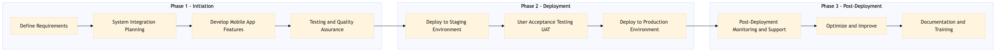

This process document outlines the management of mobile app booking channels for OTA and TMC systems, ensuring seamless integration and efficient operations.
| Trigger | Initiation of a new mobile app feature or update request from business stakeholders. |
| Outcome | Successful deployment and operation of the updated mobile app booking channel with minimal disruption to user experience and system performance. |
| Systems | Expedia Open World Partner Central Amadeus NDC Sabre GDS Travelport EVC One Key TravelAds AWS SageMaker Snowflake Kafka Salesforce Tableau |

Click to enlarge
| Step | Name & Pain Point | Role | System | Input | Output | KPI | Flags |
|---|---|---|---|---|---|---|---|
| 1.1 | Define Requirements Misalignment between technical capabilities and business needs | Project Manager | Salesforce, Tableau | Business requirements document | Detailed project plan and scope of work | 100% alignment with business objectives | ⚠ Exception |
| 1.2 | System Integration Planning Incompatibilities between systems | Technical Lead | Expedia Open World, Partner Central, Amadeus NDC, Sabre GDS, Travelport, EVC, One Key, TravelAds, AWS SageMaker, Snowflake, Kafka | Project plan and scope of work | Integration architecture document | 100% system compatibility identified | ⚠ Exception |
| 1.3 | Develop Mobile App Features Technical debt accumulation | Mobile Developer | AWS SageMaker, Snowflake, Kafka | Integration architecture document | Codebase with new features | 90% code coverage in automated tests | ⚠ Exception |
| 1.4 | Testing and Quality Assurance High number of bugs | QA Engineer | AWS SageMaker, Snowflake, Kafka | Codebase with new features | Test results and bug reports | 0% critical bugs identified | ◆ Decision⚠ Exception |
| 1.5 | Deploy to Staging Environment Deployment failures | DevOps Engineer | AWS SageMaker, Snowflake, Kafka | Tested codebase | Staging environment deployment | 90% successful deployments | ⚠ Exception |
| 1.6 | User Acceptance Testing (UAT) User dissatisfaction | Business Analyst | AWS SageMaker, Snowflake, Kafka | Staging environment deployment | UAT report and feedback | 100% user satisfaction with new features | ◆ Decision⚠ Exception |
| 1.7 | Deploy to Production Environment Deployment failures | DevOps Engineer | AWS SageMaker, Snowflake, Kafka | UAT approved codebase | Production environment deployment | 90% successful deployments | ⚠ Exception |
| 1.8 | Post-Deployment Monitoring and Support Critical system failures | DevOps Engineer, Technical Lead | AWS SageMaker, Snowflake, Kafka | Production environment deployment | Monitoring reports and support tickets | 0% critical issues within 24 hours | ⚠ Exception |
| 1.9 | Optimize and Improve Inefficient resource utilization | Data Scientist, Technical Lead | AWS SageMaker, Snowflake, Kafka | Monitoring reports and user feedback | Optimized codebase and system performance | 10% improvement in system performance metrics | ⚠ Exception |
| 1.10 | Documentation and Training Low user engagement | Technical Writer, Trainer | Salesforce, Tableau | Optimized codebase and system performance | User documentation and training materials | 90% user adoption rate within 3 months | ⚠ Exception |